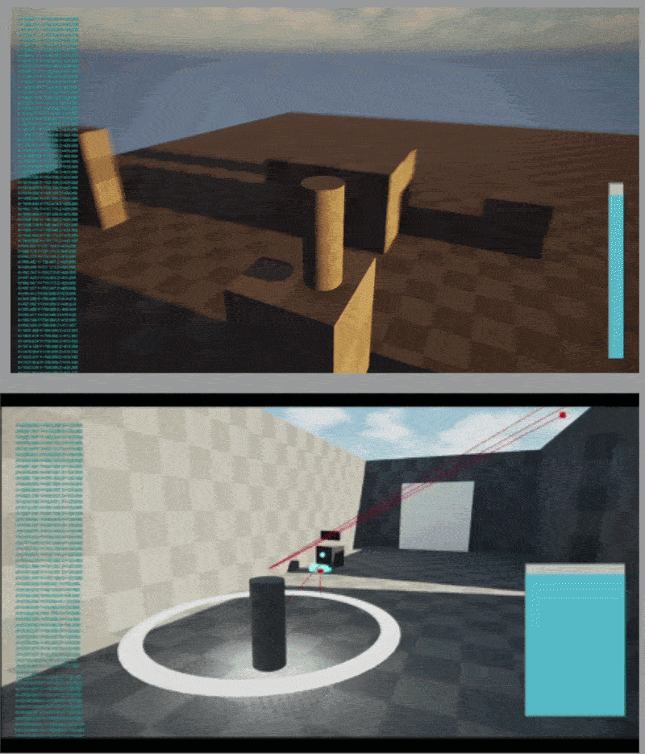

Summary #
| Role | Game Designer / Systems Designer |
|---|---|
| Team | 20 (8 designers/programmers, 12 artists) |
| Engine | Unreal Engine 5 |
| Target Platform | PC |
| Repo | Perforce |
| Development Cycle | April 2026–April 2027 |
About #
Lantern of Souls is a stealth horror game developed as the 2027 capstone project for Brigham Young University’s Animation and Games program.
You play Thiago, a Soul Master guiding a lost soul through the ruins of an underworld temple toward its next life. Restless souls haunt the halls, forcing you to use light, stealth, and supernatural abilities to evade them, light the braziers, and illuminate the way home.
Our 20-person team, consisting of eight designers and programmers and 12 artists, is developing this game over this school year.
Project Focus: Long-term game design · Iteration · Finding the fun
Timeline #
Five months into development, we had gone from bad adventure stealth game to a great horror stealth game built around fear, uncertainty, and dangerous encounters. Here’s how we got there.
A note on “we”: Design and programming decisions were highly collaborative. As design lead, I contributed across the project, and I will use “we” for shared decisions while calling out my individual contributions where relevant.
Finding the Fun (Month 1-3.5) #
Where We Started #
Lantern of Souls began as a pitch from Mailen Cruz, later our project director. (Read the original pitch deck.) Its pillars:
- Light management: Light is a constantly running timer and the core risk-versus-reward mechanic. Bright light is safer for pathfinding but attracts enemies. Dim light offers stealth but risks the soul’s extinction.
- Stealth: Players sneak so wandering spirits can’t see them.
- Tone: “Dark, mysterious, atmospheric.”
First Prototype: April 2026
Problem: The pitch said the game was about retaining light, but we didn’t know what that would feel like to play.
Solution: The team built a rough demo where light was a bar the player had to preserve. Sprinting and crouching drained it, light stations recharged it, and cube enemies patrolled. If the player’s light radius overlapped one, the game reset.
Outcome: It was decently fun but too punishing. Sprinting could drain light almost instantly, so it felt like a trap instead of a tool.
Takeaway: Light drain had to feel like a resource to manage, not a penalty for acting.

First Meeting In Class: May 4, 2026
We played the demo with our teacher and landed on a vision: make stealth fun through quick thinking, suspense, and intelligent choices, with a player who feels proactive instead of powerless. (Meeting minutes.)

What I changed: I wanted sprint and crouch to feel good before anything else. Crouching now shrinks the light radius and slows movement at no light cost, since waiting already drains light. Sprinting no longer drains light either, because being more detectable is its own drawback.
Outcome: The game improved. Enemies gained a perception component instead of detecting players on overlap, and players weren’t punished for using their tools. The team tried many abilities and scrapped most, keeping two: a Distraction to lure enemies, and the Shadow Dash.

Research
To help us develop our game we studied Aragami, Splinter Cell: Chaos Theory, Thief 2, Hitman, Metal Gear Solid V, Dishonored, Metroid Dread, and Mark of the Ninja. Three findings shaped us:
- Operating in the dark didn’t feel good. Players wanted information to make informed choices.
- Enemies had states. They patrolled, then detected the player after a grace period, so players could watch, then act.
- Slow, methodical play mattered even more given our no-killing rule.
The Shadow Dash
I’ll walk through the Shadow Dash which was one of our earliest promising abilities, to show how I iterated on core features at this time in development.
-
Phase 1 (May 18): The goal was a movement option that makes the player undetectable. With good timing, the player could phase through an enemy unseen. Players liked it, but it felt uncontrollable. They were just hitting a button to speed away, which isn’t methodical.

The early Shadow Dash. -
Phase 2 (May 25): Inspired by the teleports in Aragami and Dishonored, I let players aim the teleport and release it to a spot of their choosing. Players loved the control.
-
Phase 3 (June 2-8): I added teleporting down, and Becca Ellington added teleporting up, so players could teleport anywhere they could see. It quickly became a core element, and I spent the next week polishing it, for example keeping the player from clipping into walls mid teleport.

The Shadow Dash was core to this build, but it was later replaced. I’ll cover why in a later section.
Other things I worked on: Ontop of The Shadow Dash I worked with the team to implement and iterate upon various parts of the game including: Sprint, Crouch, General Detectability, Enemy AI and Levels.
End of month three: At this point in development we had gotten to where we had planned from the beginning the core loop existed, players could learn our abilities, and we could build ten-minute levels. But one problem was nagging the team. The most important feature: the Player-Enemy Interaction wasn’t working.
The Turning Point #
In the beginning of August, we were moving to Unreal Engine 5.7.4 when Perforce went down. With no access to the project, we took a break and played some games.
Stumbling onto something: Some teammates wanted to play The Legend of Zelda: Breath of the Wild. As a joke, we tried playing it as a stealth game.
It was surprisingly fun. The Guardians and Yiga Clan created unexpected threats without relying on the familiar vision cones and detection indicators we had been building. Sneaking between ruins and boulders felt tense because we couldn’t always predict where danger would come from.
We started asking a different question: What if we gave players less information about enemies instead of more?
Finding the word: We started brainstorming how our enemies, who are lost souls, could feel better. Mailen said she wanted something that would “scare the player.” She had said it before, but we’d always treated it as secondary to making the player feel powerful as a Soul Master. This time it clicked. We realized we enjoyed the instant-kill moments in games like Aragami because they fed a feeling of fear that now seemed important to our game.
The realization: At the end of the second day without Perforce, we were talking again and during our conversation I had an epiphany. I asked our producer, Jacob, to boot up Outer Wilds: Echoes of the Eye, and asked Mailen whether its creepy atmosphere was what she was going for. It was exactly what she wanted.
That was when we realized this wasn’t an adventure stealth game. It was a horror stealth game.
That explained why the relationship between the Guard and the player felt wrong. In adventure stealth, you’re the assassin, so guards have to be dumb to make you feel powerful. But our player couldn’t attack, so they weren’t powerful, they were bored, just bypassing enemies. In stealth horror, not being able to fight back is the experience. The player is the victim.
Rebuilding: We stopped planning for endless simple enemies and started planning a few powerful, terrifying ones, studying Alien: Isolation, Echoes of the Eye, and Five Nights at Freddy’s: Secret of the Mimic. Andrew, whom I would later make lead level designer, designed a new map with help from me and a few others. It was a playground for testing our ideas about fear and stealth, built on two core ideas:
- Open-ended levels with many ways for both you and the enemy to move. Not knowing where an enemy might be felt much scarier.
- Waypoints, not tracks: Enemies now move between waypoints instead of following a fixed route, so every encounter carries more uncertainty.
We also held a full meeting dedicated to redesigning the enemy from the ground up. I came in with a structure: walk through each detection state (patrol, investigate, attack) and ask what the player should feel in each one, then how we’d make them feel it. Most of what I contributed were the questions that turned vibes into design decisions:
- How does the enemy actually see the player? We settled on enemies that see only in front of them but hear you behind them unless you crouch.
- What does “slow and methodical” actually mean? I pushed for enemies about twice the player’s size, slow enough that you can’t rush past but not so slow it’s painful.
- We want insta-kill deaths: Should we have a cutscene on death, or a chase? I narrowed the options to three paths: instant-death cutscene, inevitable death, or a chase with a possible escape. I decided after the meeting to have the inevitable death option, which everyone was leaning towards.
I also argued for moving away from rigid vision cones toward a more nebulous sense of detection as was brought up by Jacob and Becca during our previous discussions, and I called the shadow dash into question with our new enemies, despite it being something I worked onas it made the player too powerful and didn’t jive well with our new version of stealth. (Meeting minutes.)

Paper prototypes: Andrew, Jacob, and I wrote new enemy rulesets, drew the map on paper, and recruited people outside the team to play it. Watching them showed us which enemy behaviors made encounters scary and which didn’t.

Changing my mind on the watcher: The meeting also raised the idea of revamping the watcher, our second enemy, to fit the new horror direction. I was against it. We were on a tight schedule for mid-September and I didn’t want more moving parts. Then a teammate suggested the watcher could alert the guards instead of just draining the player’s life, and the more I thought about it, the more I liked it. So I made the case in writing, as a list of pros the team could weigh. The watcher would scream when it spotted you and give the guards a point to investigate, and the player would have seconds to break line of sight before a guard closed in.
The arguments I leaned on most:
-
Simple: Changing their behavior from looking around and draining to sending out an event dispatch that alerts guards is incredibly easy and doesn’t change things like movement, animation, or general design.
-
Puts the focus back on stealth: The player is instantly put into the panic mode we wish to put them in when the guard is investigating (“If I don’t do something now, I could die”).
-
Augments our already interesting design for the guard: Like in a prison escape movie: the spotlights don’t in themselves carry fear, but rather only cause the fear of what’s going to happen next if you are caught.
I also pointed out that the watcher could absorb part of the proposed bird enemy’s proximity-alarm role, so we could test that kind of design before committing to a whole new enemy type. The team went with it, and the alerting watcher is still in the game today.


The playtest: Perforce came back on day four, and over the next few days we rebuilt our enemies and levels to match the new designs. I was the primary implementer, building the enemy behavior in Unreal with State Trees, with Jacob and Becca assisting. One night, as we neared the finish line, I stayed late adding placeholder sounds and a simple jump scare.
The next day, we put the build on the TV, and it was a hit. One developer literally fell out of their chair when the enemy appeared. There were screams and laughter, and people from other labs wandered over to see what the fuss was about. They played it and loved it too.
We had finally struck gold. Now it was time to do the actual mining.
Iterating on The Vertical Slice (Month 3.5-Present) #
The BYU Capstone Project works a little differently from other programs: we don’t try to make a full game. Instead, we build a vertical slice, a demo polished enough that someone can pick it up and understand the essence of the game within a ten-minute experience.
With the hiding, stealth, and enemy behavior validated, we moved on to building the full slice. That meant creating and refining:
- Player abilities
- A fully fleshed-out level
- Sub-objectives to give players reasons to stay in danger
- Both enemies: the Guard and the Watcher
- Anything else the player needed to enjoy and understand the core of our game
Ongoing documentation #
I’ll be adding more breakdowns of design decisions, reasoning, and player experience here soon.